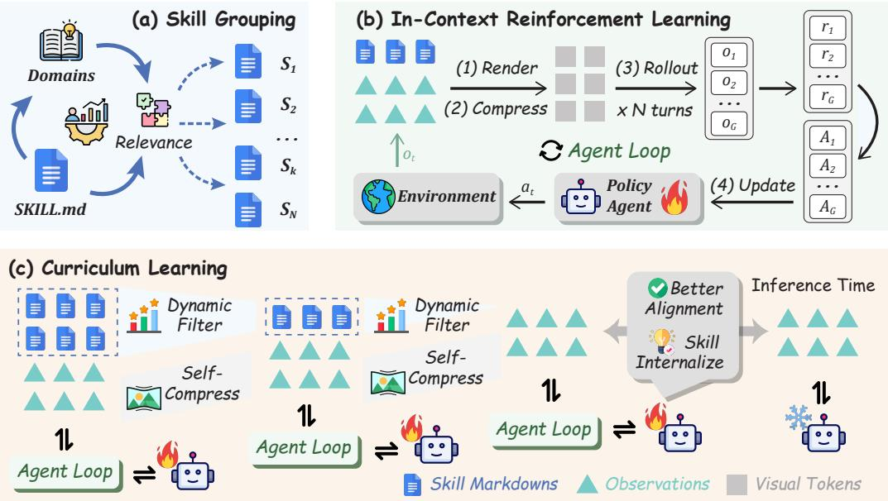

How it works
A curriculum that teaches, then takes the training wheels off.
SKILL0 starts with full skill context and progressively withdraws it, so the policy must internalize what it once read.
1
Relevance-Driven Skill Grouping
Skills are grouped offline by category and rendered with interaction history into a compact visual context.
2
In-Context RL Agent Loop
A skill-enhanced agent loop teaches tool invocation and multi-turn task completion under reinforcement learning.
3
Dynamic Skill Curriculum
On-policy helpfulness is scored per skill file; only helpful skills are retained within a linearly decaying budget — toward zero-shot.
